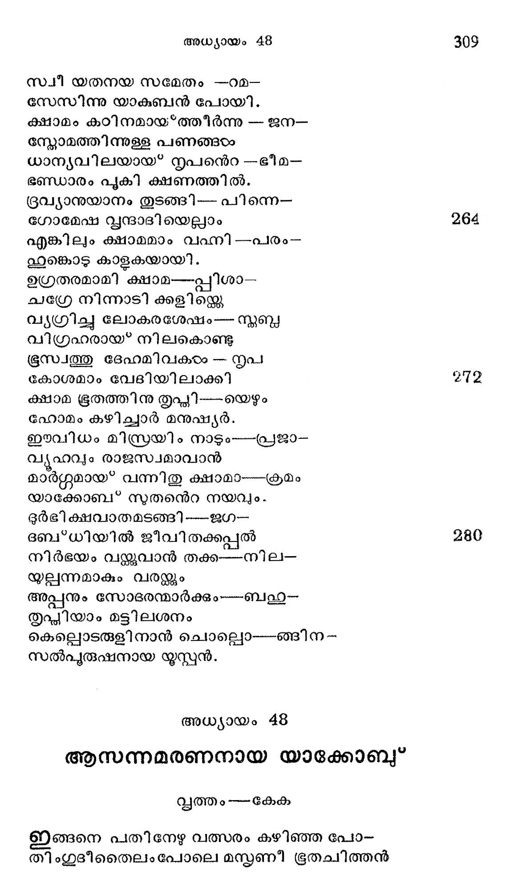
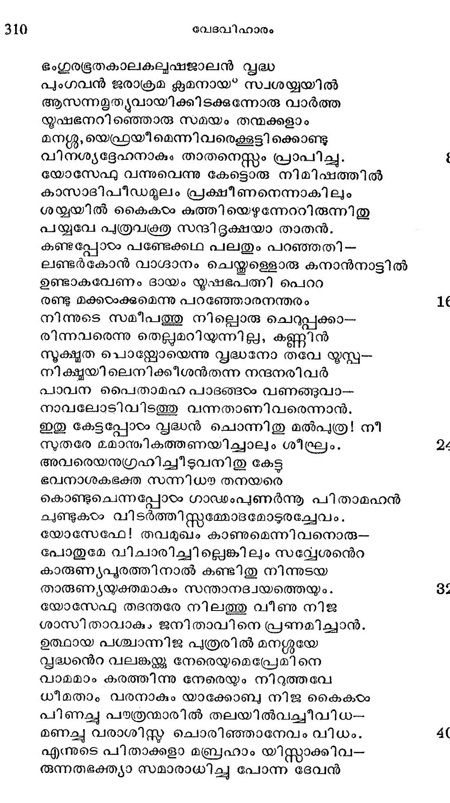
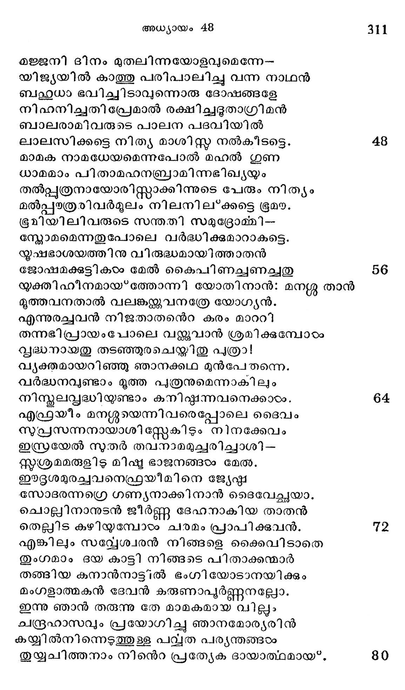

ആസന്നമരണനായ യാക്കോബ്*
വൃത്തം---കേക
ഇങ്ങനെ പതിനേഴു വത്സരം കഴിഞ്ഞ പോ-
തിംഗുദീതൈലം പോലെ മസ്കണീ ഭൂതചിത്തന്

ഭംഗുരഭൂരതകാലകല്ൃഷജാലന് പ്ൃദ്ധ
പുംഗവന് ജരാക്രമ കൃമനായ* സ്വശയ്യയില്
ആസന്നമഉൃത്യവായിക്കിടക്കുന്നോരു വാര്ത്ത
നൂഷഭനറിഞ്ഞൊരു സമയം തന്മക്കളാം
മന്്ശു, യെഫ്രയീമെന്നിവരെക്കൂട്ടി ക്കൊണ്ടു
വിനശ്യദ്ദേഹനാകും താതനെസ്സും പ്രാപിച്ചു.
യോസേഫു വന്നുവെന്നു കേട്ടൊരു നിമിഷത്തില്
കാസാദിപീഡമുലം പ്രക്ഷീണനെന്നാകിലും
ശയ്യയില് കൈകാംം കുത്തിയെഴുന്നേററിരുന്നിതു
പയ്യവേ പത്രവക്രത സന്ദിടദ്ദക്ഷയാ താതന്.
കണ്ടപ്പോഠം പണ്ടേക്കഥ പലതും പറഞ്ഞതി --
ലണ്ടര്കോന് വാഗ്ദാനം ചെയ്തള്ളൊരു കനാന്നാട്ടില്
ഉണ്ടാകവേണം ദായം യൃഷഭപത്നി പെറാ
രണ്ടു മക്കഠാക്കുമെന്നു പറഞ്ഞോരനന്തരം
നിന്നുടെ സമീപത്തു നില്ലൊരു ചെറുപ്പക്കാ--
രിന്നവരെന്നു തെല്ലമറിയുന്നില്ല, കണ്ണിന്
നുക്ഷത പൊനയ്യോയെന്നു വൃദ്ധനോ തവേ യുസ്പ--
നിക്ഷ്ഠയിലെനിക്കീശന്തന്ന നന്ദനരിവര്
പാവന പൈതാമഹ പാടങ്ങഠം വണങ്ങുവാ--
നാവലോടിവിടത്തു വന്നതാണിവരെന്നാന്.
ഇതു കേട്ടപ്പോ സൃഭദ്ധന് ചൊന്നിതു മല്പത്ര! നീ
സുതരേ മമാന്മികത്തണയിച്ചാലും ശീഘ്രം.
അവരെയനുഗ്രഹിച്ചിടുവനിതു കേട്ട
ഭവനാശകഭക്ത സന്നിധാ തനയരെ
കൊണ്ടുചെന്നപ്പോഠം ഗാഡംപുണര്ന്നൂ പിതാമഹന്
ചുണ്ടുകടം വിടര്ത്തിസ്റ്റമ്മോടമോടുരച്ചേവം.
യോസേഫേ! തവമുഖം കാണുമെന്നിവനൊരു--
പോതുമേ വിചാരിച്ചില്ലെങ്കിലും സവ്വേശനന്െറ
കാരുണൃപുരത്തിനാല് കണ്ടിതു നിന്നുടയ
താരുണൃയ്യക്തമാകും സന്താനദ്വയത്തെയും.
യോസേഫു തടന്തരേ നിലത്തു വീണു നിജ
ശാസിതാവാകം ജനിതാവിനെ പ്രണമിച്ചാന്.
ഉത്ഥായ പശ്ചാന്നിജ പുത്രരില് മനഗ്ശയേ
സൃദ്ധന്െറ വലങ്കന്ക്ക നേരെയുമെപ്രേമിനെ
വാമമാം കരത്തിന്നു നേരെയും നിറുത്തവേ
ധീമതാം വരനാകും യാക്കോബു നിജ കൈകം
പിണച്ചു പത്രന്മാരില് തലയില്വച്ചീവിധ--
മണച്ഛു വരാശിസ്ത് ചൊരിഞ്ഞാനേവം വിധം.
എന്നുടെ പിതാക്കളാ മബ്രഹാം യിസ്റ്റാക്കിവ--
രൂന്നതഭക്ത്യാ സമാരാധിച്ചു പോന്ന ദേവന്

മജ്ജനി ദിനം മുതലിന്നയോളവുമെന്നേ-
യിജ്യയില് കാത്തു പരിപാലിച്ചു വന്ന നാഥന്
ബഷഹ്ധധാ ഭവിച്ചിടാവുന്നൊരു ദോഷങ്ങളേ
നിഹനിച്ചതിപ്രേമാല് രക്ഷിച്ചഭുതാഗ്രിമന്
ബാലരാമിവരുടെ പാലന പദവിയില്
ലാലസിക്കട്ടെ നിത്യ മാശി സ്ത നല്കീടട്ടെ. 48
മാമക നാമധേയമെന്നപോല് മഹല് ഗുണ
ധാമമാം പിതാമഹനബ്രാമിന്നഭിഖ്യയം
തല്പ്പുത്രനായോരിസ്റ്റാക്കിന്നുടെ പേരും നിത്യം
മല്പ്പയത്രരിവര്മൂലം നിലനില്ക്കട്ടെ ഭൂമയ.
ഭൂമിയിലിവരുടെ സന്തതി സമുദ്രോമ്മി-
സ്നോമമെന്നതുപോലെ വര്ദ്ധിക്കുമാറാകട്ടെ.
യൃഷഭാശയത്തിനു വിരഭദ്ധമായിത്താതന്
ജോഷമക്കുട്ടികഠം മേല് കൈപിണച്ചണച്തു 56
യക്തിഹീനമായ്ത്തോന്നി യോതിനാന്:ഃ മന്റ്ശ താന്
മുത്തവനതാല് വലങ്ക്്്വനത്രേ യോഗ്യന്.
എന്നുരച്ചവന് നിജതാതനന്െറ കരം മാററി
തന്നഭിപ്രായംപോലെ വയ്ക്കുവാന് ശ്രമിക്കുമ്പോടം
വൃദ്ധനായതു തടഞ്ഞുരചെയ്തിതു പുത്രാ!
വ്യക്തമായറിഞ്ഞു ഞാനക്കഥ മുന്പേതന്നെ.
വര്ദ്ധനവുണ്ടാം മൂത്ത പത്രനുമെന്നാകില്യം
നിസ്കൂലവ്ൃദ്ധിയണ്ടാം കനിഷ്ടന്നവനെക്കാടം. 64
എഫ്രയീം മനശ്ശയെന്നിവരെപ്പോലെ ദൈവം
സുപ്രസന്നനായാശി സ്റ്റേകിടും നിനക്കേവം
ഇസ്രയേല് നുതർ തവനാമമുച്ചരിച്ചാശി-
സ്തശ്രമമരുളിട മിഷ്ട ഭാജനങ്ങടം മേ.
ഈദൃൂൃശമുരച്ചവനെഫ്രയീമിനെ ജ്യേഷ്ണ
സോടദരന്നഗ്രെ ഗണ്യനാക്കിനാന് ടൈവേല്ഛയാ.
ചൊല്ലിനാനുടന് ജീര്ണ്ണ ഭേഹനാകിയ താതന്
തെല്ലിട കഴിയുമ്പോടം ചരമം പ്രാപിക്കവന്. 72
എങ്കിലും സവ്യേശ്വരന് നിങ്ങളെ ക്കൈവിടാതെ
തുംഗമാം ഭയ കാട്ടി നിങ്ങടെ പിതാക്കന്മാർ
തങ്ങിയ കനാന്നാട്ടില് ഭംഗി യോടാനയിക്കും
മംഗളാത്മകന് ദേവന് കരുണാപൂര്ണ്ണനല്ലോ.
ഇന്നു ഞാന് തരുന്നു തേ മാമകമായ വില്ലം
ചന്ദ്രഹാസവും പ്രയോഗിച്ച ഞാനമോര്യരിന്
കയ്യില്നിന്നെടുത്തുളള പവ്വത പര്യന്തങ്ങഠം
തുയ്യചിത്തനാം നിന്െറ പ്രത്യേക ദായാത്ഥാമായ*, 80
